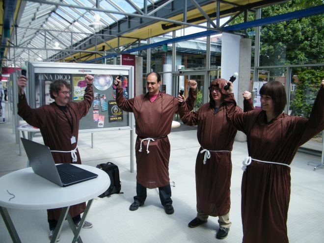

(2015) A game exploring prayer, superstition and how to design with worship
Sacred Harvest is a game co-developed with Tom Feltwell and Conor Linehan as part of the Global Game Jam 2015. It is a game of Celtic mysticism, where players act as a tribe developing prayers to the spirits in the hope of a good harvest.

The game asks players to develop prayers based on a vocabulary of simple physical poses. They can choose any combination they like, and the game records the movement of the players using the PlayStation Move controllers.
Based on the prayer, the harvest is either good or bad. Good harvests mean feasts and celebration. Bad harvests result in the slowest of the players starving to death. The players are then asked to revise their prayer for the next season and play continues as long as a tribe member is still alive.
The idea of the game is related to our work on Non-League Football Supporter, in that the design of the game encourages players to develop folk theories and superstitions around how to please the spirits given the limited feedback from the game.
Given the game is physical and involves movement and coordination between people, there is a huge amount of scope for players to attribute blame and develop theories - was it the poor coordination of a team member that doomed the harvest? Was it the choice of postures? The order? The repetition?
*Thanks to Gavin Wood for help working with the PS Move controllers.
We are still developing the research, but discussed initial findings at the Digital Games Research Association (DiGRA) conference this year:
Ben Kirman, Tom Feltwell and Conor Linehan (2015) Player superstition as a design resource. In DiGRA Conference Extended Abstracts. Lüneburg, Germany
[caption id="attachment_206" align="alignnone" width="660"] Some of the brave players at DiGRA![/caption]